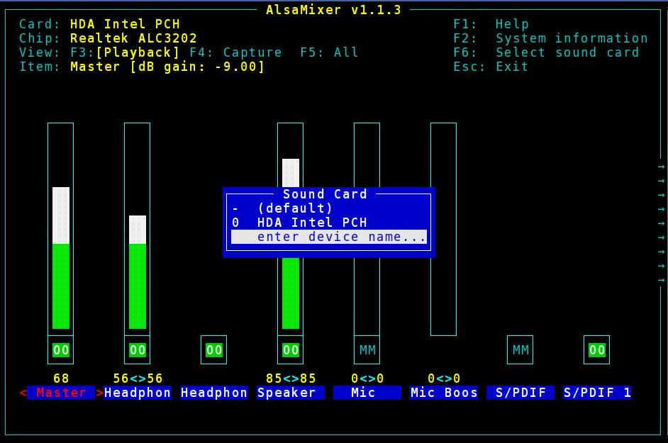

Conventions
What is Alsamixer-Plus
It adds extra facilities to an alsamixer audio controller by providing a pre-amp and a frequency band equalizer.
Typical Use Cases
The local loudspeakers under or over emphasise some audio frequencies.
The equalizer can correct the imbalance.
The local system outputs a low audio volume level.
The pre-amp can boost the overall volume level.
Overview
The audio signal passes from the default ALSA device along a chain which includes two signal processing stages.
Stage 1: Equalizer
Various frequency ranges in the signal can be boosted or cut.
Alternatively the signal can be left unchanged i.e. it remains flat.
Stage 2: Pre-Amp
The entire signal level may be boosted or cut.
This adjusts the overall volume of both playback and recording.
The last link in the chain passes the audio signal to the local loudspeakers or to an external audio system.
|
|
The effect of the stages is cumulative and works in conjunction with changes you make to other alsamixer controls. |
|
|
Both the equalizer and pre-amp may be operated from within the usual alsamixer interface. You can switch between them by using the F6 key on your keyboard. |
Boosting a Low Volume Level
Open alsamixer
If neccesary use the → key on your keyboard to scroll to the Pre-Amp control usually located at the extreme right of alsamixer.
The pre-amp level can be adjusted in the usual way by the up/down arrow keys on your keyboard.
|
|
Using an excessively high level may overload your loudspeakers, which is usually heard as distorted sound, and may result in damage. Set the lowest level of boost that gives you an acceptable volume level. |
Setting a Preferred Frequency Balance
Open alsamixer
Press the F6 key on your keyboard to Select sound card.

Use the up/down arrows on your keyboard to highlight enter device name… and press the return key.
Enter equalizer and press the return key.
The frequency band levels can be adjusted in the usual way by the up/down arrow keys on your keyboard.
Press the F6 key to return to the previous alsamixer window or the ESC key to close alsamixer.
Changing the Defaults
Usually the default settings do not have to be changed, they work with most kit.
If your hardware requires different settings they may be changed in the file /etc/asound.conf.
|
|
Use root privileges to edit the settings in your preferred text editor |